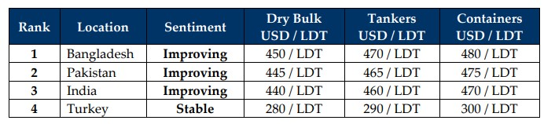

inWeekly Demolition Reports14/04/2025

An extremely volatile week of tariff announcements, suspensions, mishandling of economic affairs and fluctuating markets has left Indiansub-continent ship recycling destinations on edge, fearful of the next moves by a seemingly irrational & aggressive Trump regime. Indeed, global stock markets declined nearly 20% and lost over USD 11.2 Trillion, only to appreciate by about 10% in the days following the announcement of a 90-day suspension on all tariffs to nearly all countries worldwide. While most of the world watched on in silence to see it all play out, the EU and China responded in kind placing counter-tariffs against the United States resulting in the stock markets continuing their decline despite Pres. Trump reversing course mid-week. His tit-for-tat act with China too shows no signs of abating as about 125% in duties have been placed by China so far while counter-tariffs to the tune of 145% have been levied by the United States. Reportedly, Trump’s tariff backtracks erupted on the back of a massive sell-off of U.S. Treasury Bonds (the Gold standard of currency for the U.S. Federal Government) from the Japanese market that caused the Team Trump to panic, resulting in his administrations erratic actions through this week. For the sub-continent ship recycling markets however, the key driver will be just how hard steel prices / non-ferrous steel trade will be hit when it comes time for ship-recyclers to sell their product.
Although the 90-day suspension seems to have given recyclers some reprieve for the time being, the deadline realistically stands a mere quarter away. In the interim, oil has volleyed like a beach ball in the wind, declining all the way to USD 56/barrel mid-week (lowest levels seen since 2020), before climbing back up to USD 61.50/barrel where it ended the week, and future declines are still expected as OPEC+ countries re-affirmed their decision to increase output despite tit-for-tat trade wars raising global economic uncertainty and rising lack of energy demands abound. Even the U.S. Dollar spiked briefly against all ship recycling nation currencies before settling down with a surprising result, where even the Lira made decent gains against the Dollar. And global trade markets too continued to take a dunk in the tariff pool as freight rates cooled, although they did even out towards the end of the week and report minor gains. What comes of this dip in rates remains to be seen since no fresh tonnage has made its way onto the bidding tables of late. And this has demonstrated itself in plain sight at the respective anchorages this week as India (technically) reports its first ‘empty’ report, while Pakistan impressively takes in the most tonnage in the sub-continent. Through it all, Turkey continues to idle in stand-by, waiting for the opportune moment to set into gear – as long as there is some tonnage to feed into any of the markets at this time.
Finally, for those facilities (especially ones with incoming deliveries over the next tides) who are to initiate yard upgrades to HKC standards in Bangladesh and have failed to do so just yet, the possible extension from the March 31st decline is expected to come through next week once the nation returns from the longest Eid Holiday on record, and the Ministry of Industries has passed the requisite file over to the newly formed Ship Recycling Board in order to coordinate any extension further. With HKC deadline expected on 26 June this year along with the Trump regime re-visiting the tariffs shortly thereafter, 2024 seems as though it may have just been a ripple in a pool that’s slow drained itself into the rapids of 2025, especially if long-term tariffs come into effect and / or worse yet, a large(er) than expected number of ship recyclers fail to make the HKC cut and have to shut shop.

📄 Download PDF: Ship-recycling-market-insight-Week-15-04-11-2025-Tariff_Tainted.pdfSource: GMS,Inc.https://www.gmsinc.net/gms_new/index.php/web